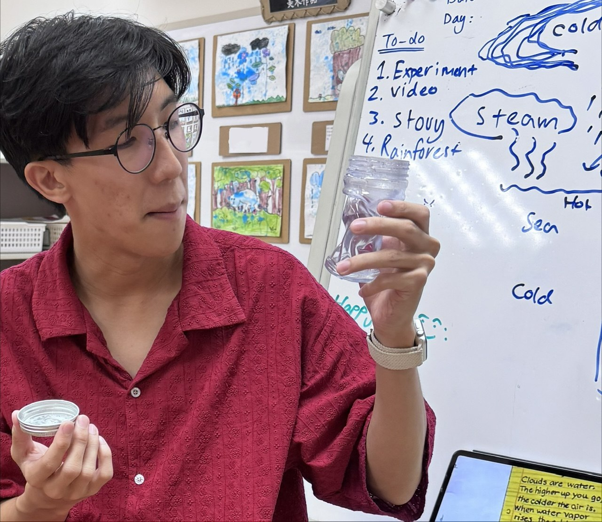

My First Skool (2023-2025)
I previously worked at My First Skool as an English Teacher, where I honed my pedagogical awareness, lesson planning and implementation skills, and design-thinking for creating inclusive, effective learning materials.
I learnt to plan and facilitate events; Inter-Generational projects, graduations and cultural celebrations. I worked closely with families, center colleagues and institutions like Science Center and the National Arts Council to play field-trips, arts workshops and guest talks.
I also designed materials, lessons and routines to acomodate different learning needs. Ensuring that the education I provide is accessible and effective.